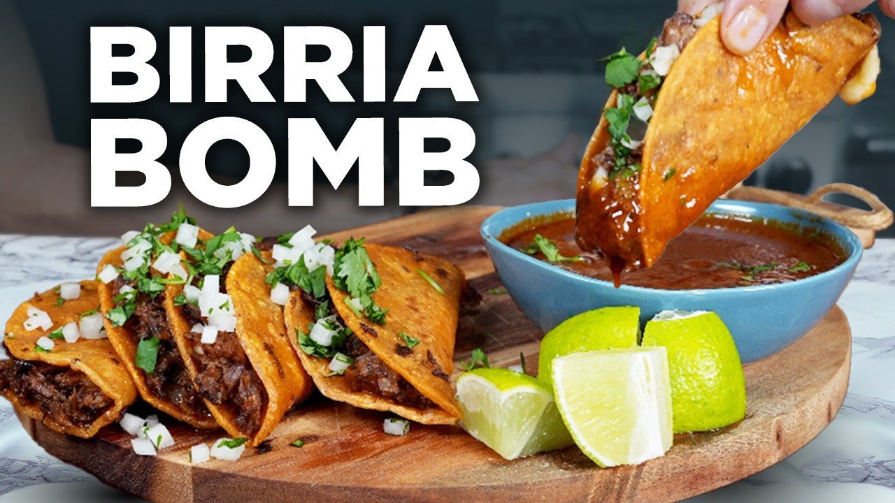

Quesabirria tacos de res, after Not Another Cooking Show, whose one correction to the internet: dip the tortillas in the skimmed fat, not the broth — fat fries crisp, broth turns them to wet paper. The consommé is for drinking on the side.
Stir the spice blend together. Boil the chiles with the tomatoes, onion half, and garlic for 20–30 minutes, until the chiles are completely soft. Drain, then blend with 2 tbsp of the spice blend, the vinegar, and a little water until dead smooth.
Season the beef generously with salt and sear hard in oil in a Dutch oven, browning both sides. Remove. Pour in the chile sauce (kill the heat first — it spits) and fry it a couple of minutes until darkened.
Add the stock, water, cinnamon stick, peppercorns, bay, vinegar, and a big pinch of salt. Beef back in, boil, cover, and simmer on low 3 hours until it shreds with a look.
Rest the pot off heat, then skim the red fat into a bowl and keep it — that's the taco-frying gold. Shred the beef on a board and ladle a little consommé over it. Taste the broth; salt it.
Griddle over medium-high. Dip one side of each tortilla in the reserved fat only — never the broth — and toast 15 seconds per side.
Melt a handful of cheese straight on the griddle, lay a tortilla on it, press, then scrape and flip so the crispy cheese faces up. Top with beef, fold, and press with a spatula until both sides are crisp and sealed.
Onion, cilantro, lime over the tacos. Serve each plate with a cup of hot consommé for dipping — or drinking. Nobody will judge.